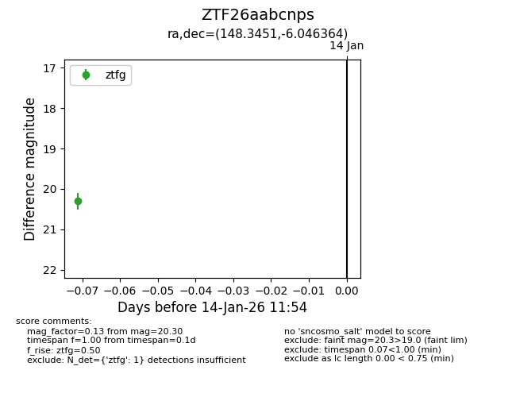
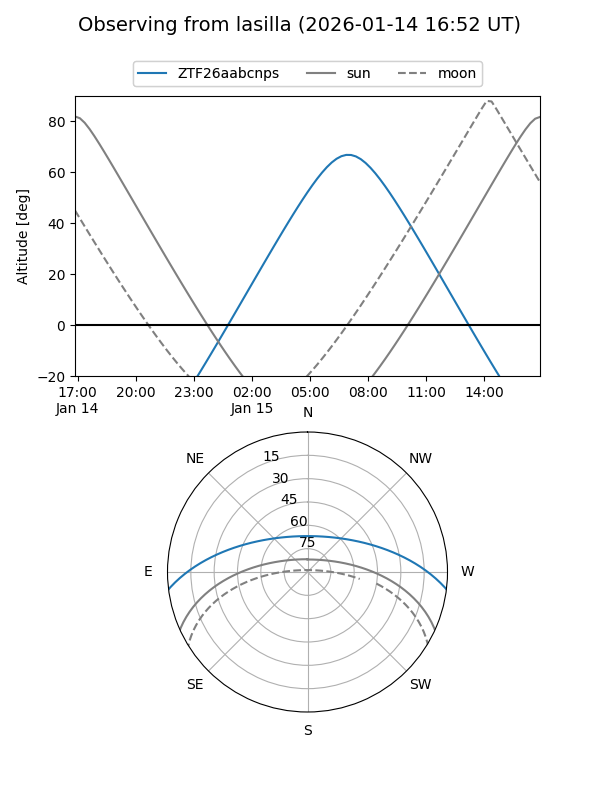
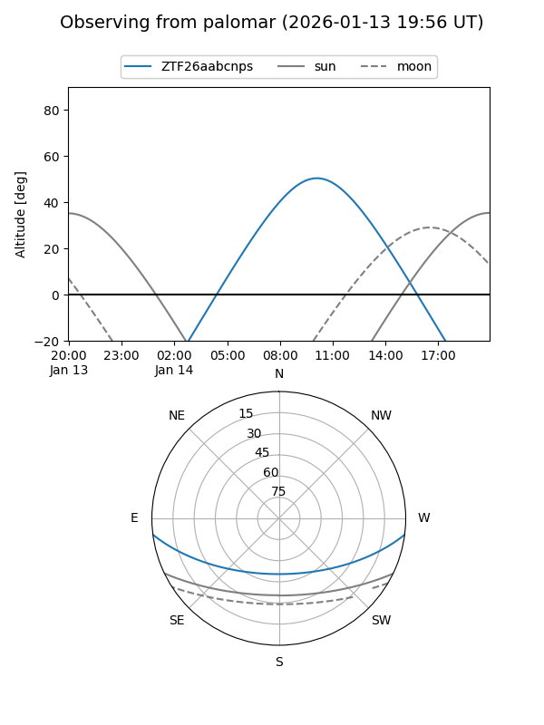

ZTF26aabcnps
Target ZTF26aabcnps at 2026-01-14 11:55
Aliases and brokers:
FINK: link
Lasair: link
ALeRCE: link
alt names
ZTF26aabcnps (ztf,fink_ztf)
Coordinates:
equatorial (ra, dec) = 148.3451,-6.04636
equatorial (HMS+DMS) = 09:53:22.82,-06:02:46.91
galactic (l, b) = (243.8215,+35.66655)
Flags:
Photometry:
last ztfg=20.30
1 ztfg detections
Lightcurve

Visibility


Additional plots